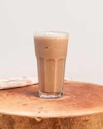

Receta para hacer milo.

Ingredientes:
- Milo.
- Leche.
- Agua.
- Azucar
Pasos:
- Ponemos a calentar el agua.
- Luego de haber hervido el agua le agrgamos el milo.
- Luego de haber agregado el milo, le agregamos la leche.
- Y por ultimo agregamos azucar al gusto.
- Sirve y acompaña con tu snacks favorito.